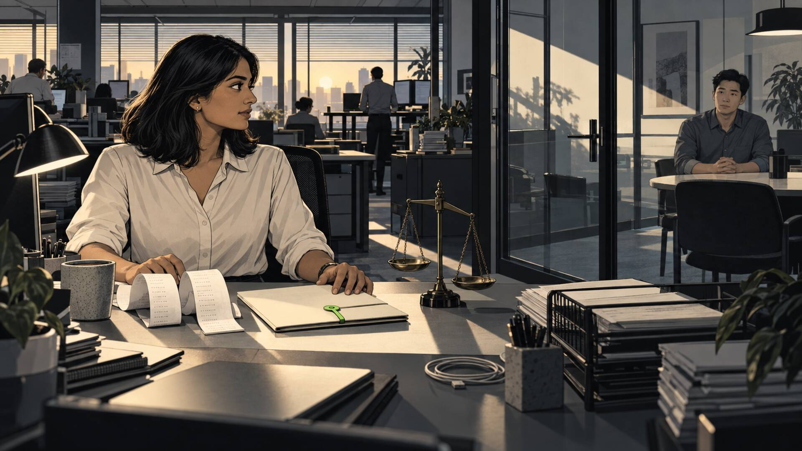
01 · Close
Daniel is waiting for the numbers.
Business day 3 of the September close. Maya Patel, staff accountant at Arbor Analytics, opens Chase Operating ••4821. Daniel Kim, her controller, is waiting to sign off.
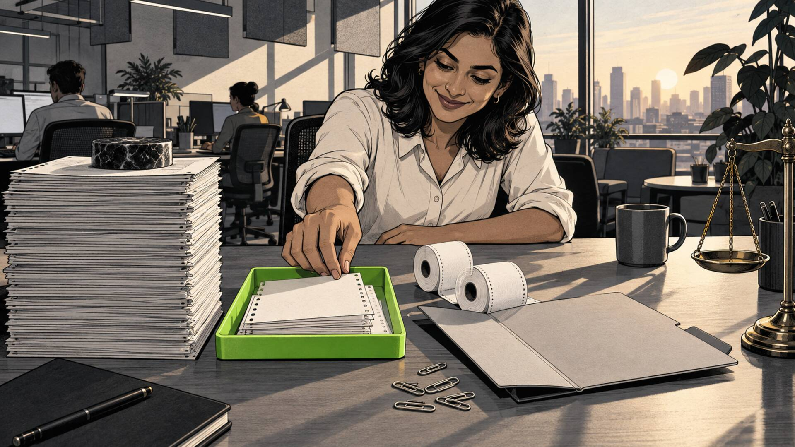
02 · First look
Only fourteen left.
About 200 transactions already matched. Fourteen left; a difference of ($82,741.31) to bring to $0.00. Most of the work is already behind her.
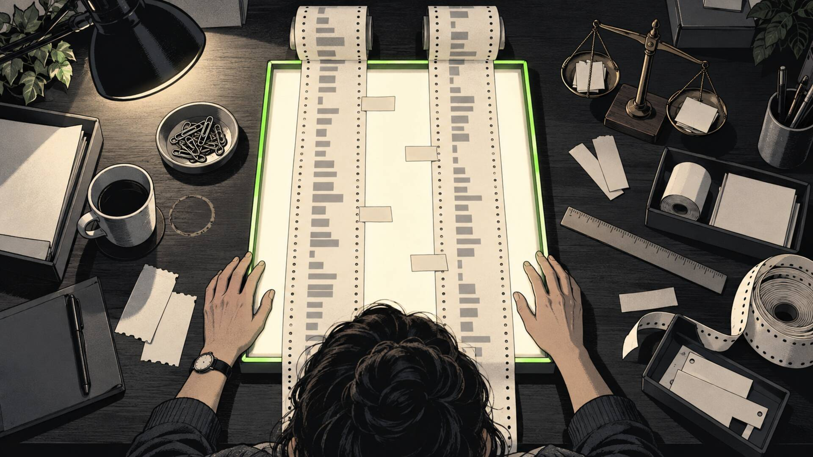
03 · Bearings
Two tapes. Every gap in view.
No more jumping between tabs, trying to hold both sides in her head. Maya can see what lines up, what doesn't, and where to start.
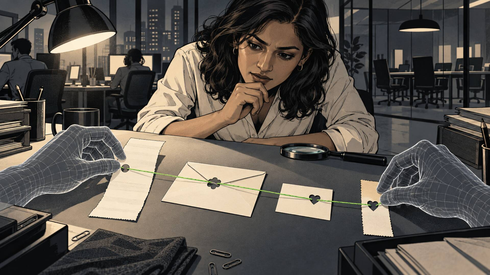
04 · Evidence
Ember lays out the evidence.
AI can be wrong. Ember shows Maya why it thinks these belong together, with the receipt there to check. She doesn't have to take its word for it.
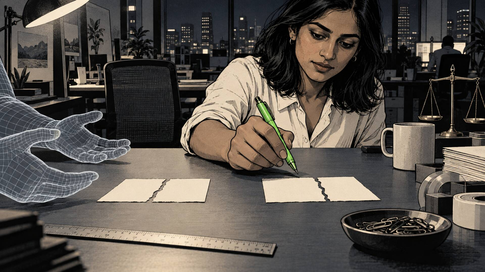
05 · Her call
Maya keeps the pen.
If a suggestion looks wrong, she says so. Ember finds another possibility. She decides what belongs together.
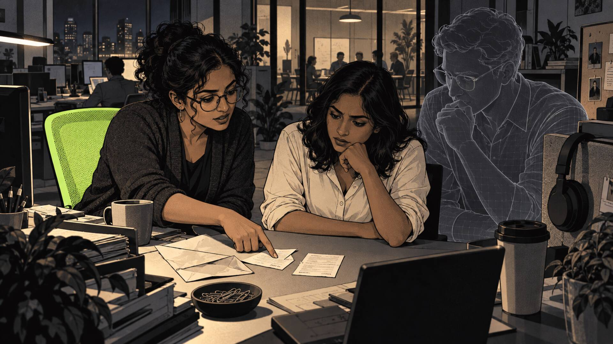
06 · Together
Priya pulls up a chair.
Priya Shah in AP knows the backstory of half these exceptions. Maya asks her and Ember about this payment, with the evidence right there. Nobody has to start the story over.
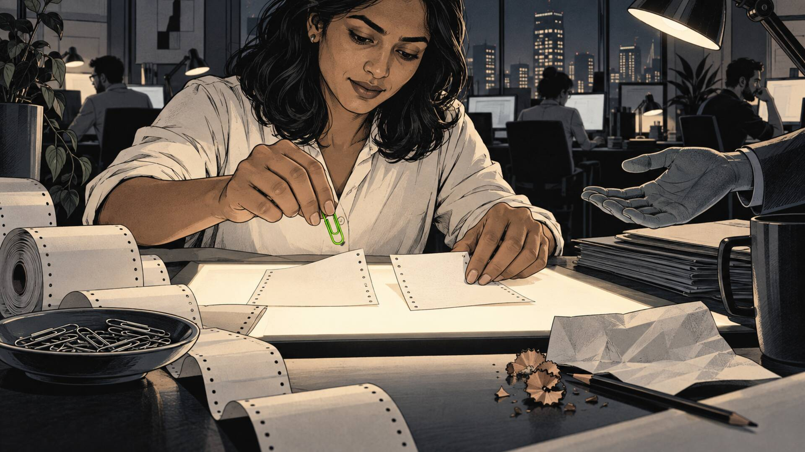
07 · Room to rethink
The paperclip comes off.
Changed your mind? Put it back. A wrong turn doesn't have to become a mistake you're stuck with.
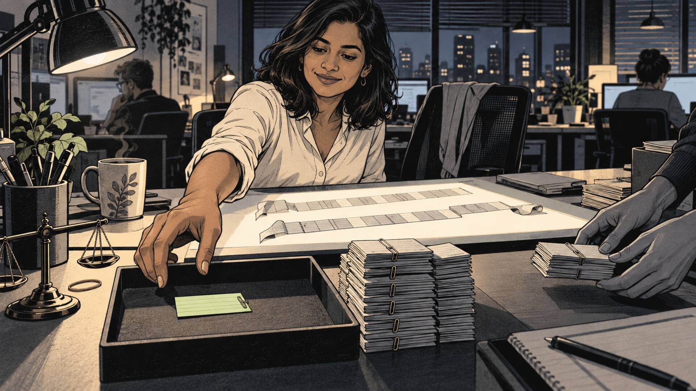
08 · The work
The pile gets smaller.
That one's done. That one's done. Maya is moving quickly because she knows why each one matches.
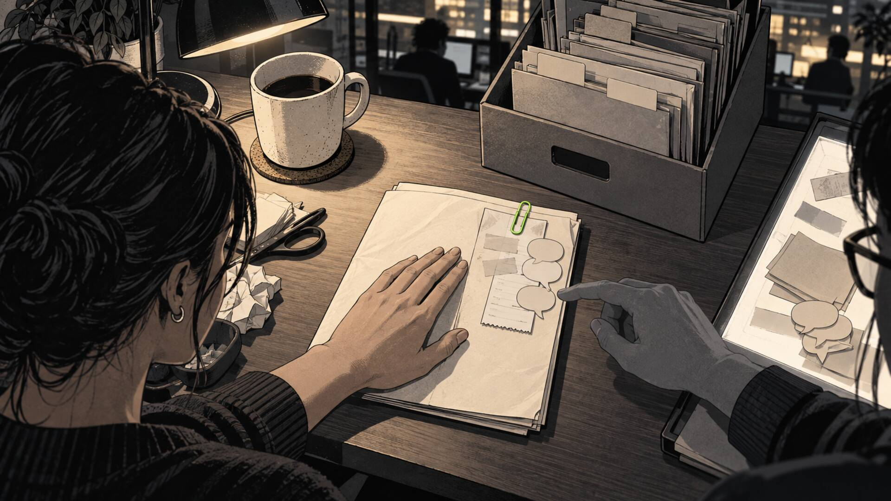
09 · What stays
The answer stays with the paper.
Why it matched. What Priya knew. What Maya corrected. That's what we want Ember to learn from, beyond a yes or a no.
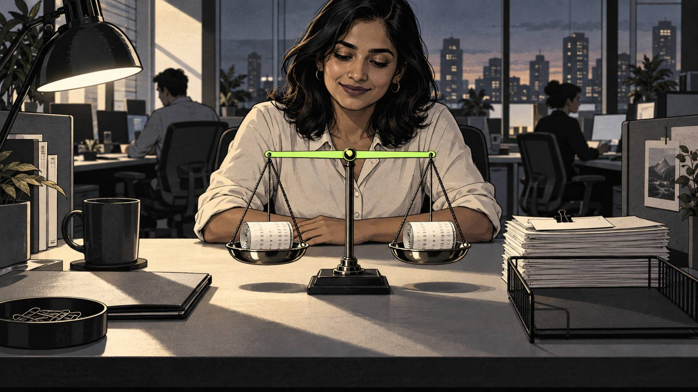
10 · Done
The scale settles level.
($82,741.31) becomes $0.00. Fourteen unmatched becomes zero. Every item accounted for; Maya knows she's done.
11 · Ready for review
Maya slides the folder to Daniel.
The answers travel with the work. Maya knows this work, and she's ready for his questions. She won't have to piece the story back together.
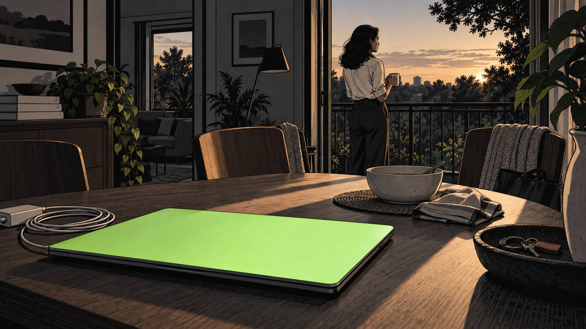
12 · After
The laptop stays shut.
Done. She can go. Those fourteen loose ends aren't coming home with her.